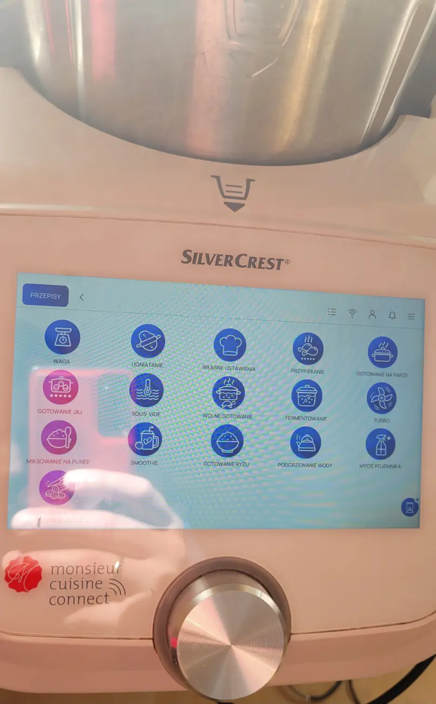
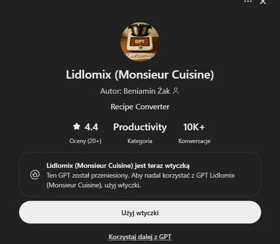

Dwa katalogi przepisów
Na testowym Connect jest 8 613 przepisów w katalogu offline i 6 203 w zakładce „Przepisy Dostosowane Pro”. Katalog jest już zapisany na robocie, więc mogę od razu wyszukać i otworzyć przepis bez internetu.
Zobacz katalogDziennik projektu · Monsieur Cuisine Connect
Kto powiedział, że stary Monsieur Cuisine Connect musi się zestarzeć? Mówili, że się nie da. A jednak. Dziś na jednym robocie mogę uruchomić fabryczne Monsieur Cuisine albo wybrać Lidlomix Pro, który zbudowałem od podstaw.
Zobacz, jak to wygląda

Na testowym Connect jest 8 613 przepisów w katalogu offline i 6 203 w zakładce „Przepisy Dostosowane Pro”. Katalog jest już zapisany na robocie, więc mogę od razu wyszukać i otworzyć przepis bez internetu.
Zobacz katalogDo menu dodałem tryby, których wcześniej nie miałem w tej postaci na Connect. W pokazie widać też, jak Pro prowadzi przez przepis, pokazuje krok ważenia i udostępnia skróty do wagi, Turbo i mycia.
Zobacz prowadzenie przez przepisPierwsze próby dopasowania kroków i przesyłania przepisów się udały. Obok eksportu do Worda jest teraz droga na urządzenie. Asystent przygotowuje kroki i nastawy, a aplikacja na telefon przesyła gotowy plik przez lokalne Wi-Fi.
Poznaj asystentaOd tego zaczął się projekt
To asystent, który pomaga przerabiać przepisy na Monsieur Cuisine. Z niego wyrósł pomysł, żeby gotowy przepis można było otworzyć na ekranie robota.
Dane z karty GPT z 13 listopada 2026.
Wtyczka jest już dostępna. Według komunikatu ChatGPT z dotychczasowego GPT można korzystać do 11 grudnia 2026. Przepis zapisany jako JSON można przesłać do Lidlomix Pro.

Dziennik zmian
Najpierw przerabiałem przepisy w ChatGPT. Potem chciałem otwierać je prosto na ekranie robota.
Czytaj wpisFabryczne Monsieur Cuisine i Lidlomix Pro na jednym urządzeniu. Zobacz ekran wyboru, menu i katalog offline.
Czytaj wpisOtwórz przepis, zobacz krok ważenia i sprawdź, jak przepis z telefonu trafia na Connecta.
Czytaj wpisPokazy wideo
Pierwsze nagranie jest w planie. Zacznę od uruchomienia Connecta, pokażę oba ekrany startowe, menu i wyszukiwanie przepisu bez internetu.
Zostaw adres e-mail i wybierz model. Zapis służy do kontaktu w sprawie testów Lidlomix Pro. Twój adres nie pojawi się publicznie.
Jeśli chcesz pomóc mi rozwijać Lidlomix Pro, możesz dorzucić się do kolejnych prób na sprzęcie. Chcę też sprawdzić, co uda się przenieść na Monsieur Cuisine Smart.